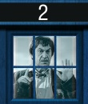
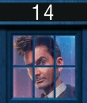
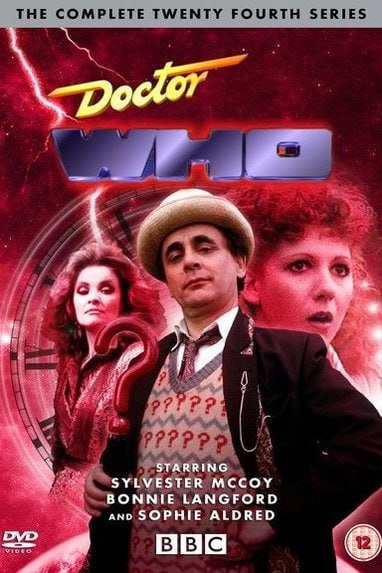
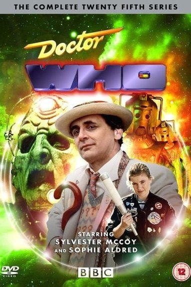
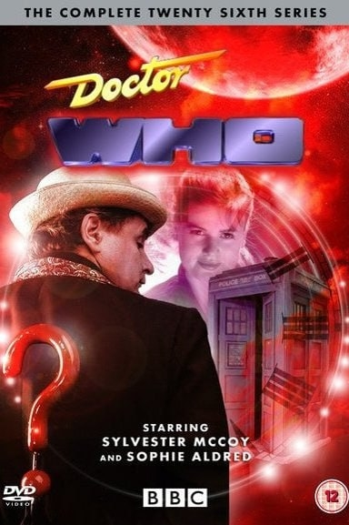

Таблица коллекции |  Навигация по канону |  Связные экранизации |




Новая эра (Ньюскул) с 2005 по 2022:


Перезапуск (Whoniverse) с 2023:


----

Эра Седьмого Доктора
Актёр: Сильвестр МакКой
Доктор Кто (Классика) - 24 сезон (1987)



Дебют Седьмого Доктора (Сильвестр Маккой). В сезоне четыре истории: «Время и Рани», «Райские башни», «Дельта и знаменосцы», «Драконье пламя». Доктор путешествует с Мэл Буш, а в финале появляется Эйс — будущая ключевая спутница. Сезон вернулся к формату отдельных историй без сквозной арки и задал более мрачный, притчевый тон сериалу.
2. Райские башни (Paradise Towers) - 4 эпизода
3. Дельта и знаменосцы (Delta and the Bannermen) - 3 эпизода
4. Драконье пламя (Dragonfire) - 3 эпизода
Варианты озвучек, подробности выхода и другие ссылки на просмотр в описаниях серийНаш плейлист сезона в ВК
Таблица сезонов и озвучек
Доктор Кто (Классика) - 25 сезон (1988)



Сезон выделяется смелыми социальными аллюзиями — от расизма и сегрегации до медиа как инструмента контроля. Тон заметно темнее прежнего: сказочность сменяется притчей, а Доктор из чудака-путешественника превращается в расчётливого манипулятора, ведущего собственную игру. Эйс — новая спутница с непростым прошлым — приносит в сериал живую подростковую энергию, а их дуэт задаёт основу для всего последующего развития классического сериала.
2. Патруль счастья (The Happiness Patrol) - 3 эпизода
3. Серебряная Немезида (Silver Nemesis) - 3 эпизода
4. Величайшее шоу в галактике (The Greatest Show in the Galaxy) - 4 эпизода
Варианты озвучек, подробности выхода и другие ссылки на просмотр в описаниях серий
Доктор Кто (Классика) - 26 сезон (1989)



Последний сезон классического сериала — всего четыре истории, но каждая заметно длиннее и плотнее обычного. Сериал окончательно уходит от формата «приключение недели» к единым драматическим аркам: раскрывается прошлое Эйс, а сам Доктор становится не просто путешественником, но стратегом, плетущим многоходовые комбинации. Тон мрачный, фаталистичный, с ощущением финала — и вместе с тем сезон полон энергии и амбиций, показывая, каким мог бы стать сериал, если бы его не закрыли. Это прощание и обещание одновременно.
2. Призрачный свет (Ghost Light) - 3 эпизода
3. Проклятие Фенрика (The Curse of Fenric) - 4 эпизода
4. Выживание (Survival) - 3 эпизода
Варианты озвучек, подробности выхода и другие ссылки на просмотр в описаниях серий
----
Также появляется в:
- (1996) Доктор Кто (фильм)
- (2013) 7 сезон, 13 серия: Имя Доктора (небольшое появление)
- (2013) Спецвыпуск: День Доктора (небольшое появление)
- (2022) Спецвыпуск: Сила Доктора (небольшое появление)